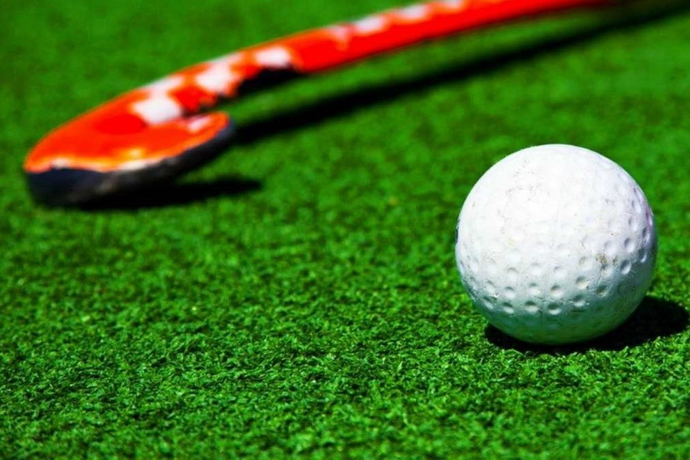
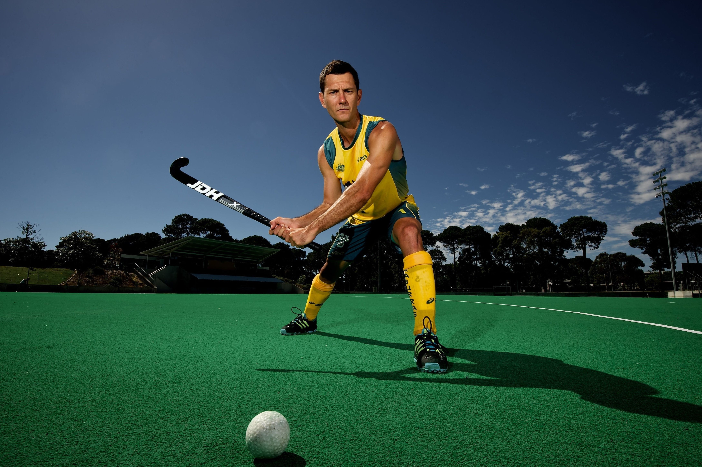
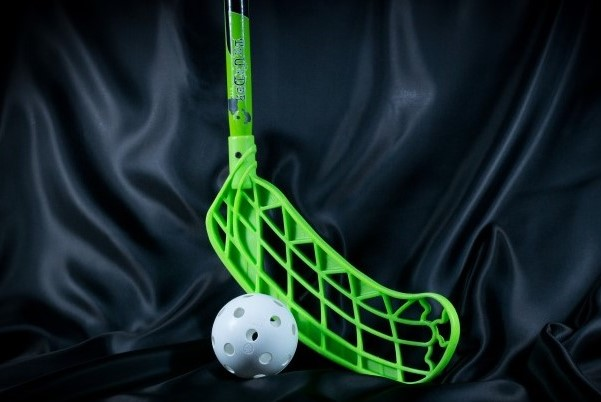
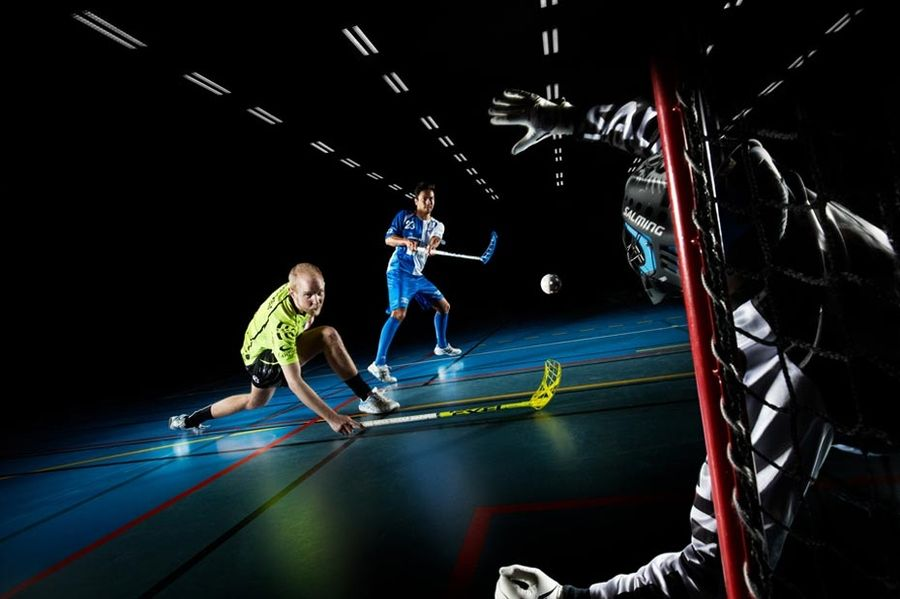

Главная
Поиск

Хоккей на траве - спортивная командная игра с клюшками и пластиковым мячом на траве, целью в которой является забросить мяч в ворота соперника большее число раз, чем это сделает команда соперника в установленное время. Хоккей с мячом на траве популярен как среди мужчин, так и среди женщин.

Флорбол - разновидность хоккея с мячом, предназначенная для закрытых помещений с твердым напольным покрытием.

Это молодая и динамично развивающаяся дисциплина. Первоначально игра предназначалась для тренировок хоккеистов в летнее время для поддержания формы, поэтому ее правила очень схожи с классическим хоккеем на льду. В различных странах называют игру по-разному: в Швеции - «напольный бенди», в США - «флорхоккей», в европейских государствах - «анихоккей». Болельщиков она привлекает большим числом интересных и зрелищных комбинаций.
